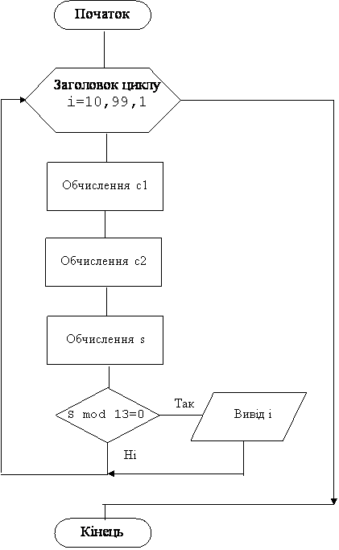

Назад
Зміст
Вперед
Задачі на пошук в інтервалі чисел, що задовольняють деякій умові
Всі шукані цілі числа у цих задачах вибираються за умовою з деякого інтервалу: двохзначні з інтервалу [10, 99], трьохзначні з інтервалу [100, 999], або з будь-якого іншого інтервалу.
Приклад 1
Надрукуйте всі парні натуральні двозначні числа.
Дано: У програму нічого не вводиться. Всі числа вибираються з інтервалу [10, 99]
Знайти: серед цих чисел знайти парні та вивести на екран
Змінні:
Вхідних даних немає
Вихідних даних немає
Проміжні дані:
- i – двохзначне число (ціле)
Алгоритм
- Оператор циклу for i:=10 to 99 do автоматично змінює i від 10 до 99
- Оператор if i mod 2=0 then перевіряє i на парність
- Якщо i парне, то воно виводиться на екран оператором write(i,' ')
Програма
var i:integer;
begin
for i:=10 to 99 do
if i mod 2=0 then write (i,' ');
end.
|
Результат роботи програми
|
На екрані |
|---|
10 12 14 16 18 20 22 24 26 28 30 32 34 36 38 40 42
44 46 48 50 52 54 56 58 60 62 64 66 68 70 72 74
76 78 80 82 84 86 88 90 92 94 96 98
|
Приклад 2
Надрукуйте всі натуральні двозначні числа, у яких сума квадратів цифр кратна 13.
Змінні:
Вхідні дані:
- i – двохзначне число(ціле)
Вихідні дані:
- i – двохзначне число(ціле)
Проміжні дані:
- c1 – перша цифра
- c2 – друга цифра
- s – сума квадратів цифр
Алгоритм
- Оператор циклу for i:=10 to 99 do автоматично змінює i від 10 до 99.
- Оператор c1:=i div 10 обчислює першу цифру
- Оператор c2:=i mod 10 обчислює другу (останню) цифру.
- Оператор s:=sqr(c1)+sqr(c2) обчислює суму квадратів цифр.
- Оператор if s mod 13=0 then перевіряє цю суму на кратність 13.
- Якщо s кратна 13, то число i виводиться на екран оператором write(i,' ')
Блок-схема програми

Программа
var i,s,c1,c2:integer;
begin
for i:=10 to 99 do
begin
c1:=i div 10; c2:=i mod 10;
s:=sqr(c1)+sqr(c2);
if s mod 13=0 then write (i,' ');
end;
end.
|
Результат роботи програми
|
На екрані |
|---|
|
15 18 23 32 46 47 51 64 69 74 79 81 96 97 |
Варіанти задач
1
- Надрукуйте всі цілі числа з інтервалу [120;150]
- Знайти всі трьохзначні числа, сума цифр яких дорівнює числу A.
2
- Надрукуйте всі цілі числа з інтервалу [90;110]у зворотному порядку.
- Знайти всі трьохзначні числа, середня цифра яких дорівнює сумі першої та останньої цифр.
3
- Надрукуйте всі натуральні двозначні числа кратні 3.
- Знайти всі трьохзначні числа, в яких є цифра 7 та які кратні 7.
4
- Надрукуйте у зворотному порядку всі натуральні двозначні числа кратні 11.
- Знайти всі двохзначні числа, які кратні сумі своїх цифр.
5
- Надрукуйте всі цілі парні числа від A до 20.
- Знайти двохзначне число, у якого куб суми його цифр дорівнює квадрату самого числа.
6
- Надрукуйте всі цілі числа, що закінчуються цифрою 2 від 10 до B.
- Знайти двохзначні числа, які дорівнюють потроєному добутку своїх цифр.
7
- Надрукуйте всі двохзначні числа, що закінчуються цифрою 0.
- Знайти всі двохзначні числа, у яких подвоєна сума цифр дорівнює добутку цифр.
8
- Надрукуйте всі цілі числа з інтервалу [20;50] що кратні 5 та некратні 3.
- Надрукуйте в рядок всі трьохзначні числа, сума цифр яких кратна 20.
9
- Надрукуйте всі цілі числа, з інтервалу [1;50] що кратні 5 або 7.
- Надрукуйте всі цілі числа з інтервалу [200,400] в запису яких є цифра 5.
10
- Надрукуйте всі цілі числа, з інтервалу [35;60] що при діленні на 7 дають залишок 1, 2 або 5.
- Надрукуйте всі числа від 100 до 150 у яких всі три цифри різні.
11
- Надрукуйте квадрати всіх цілих чисел від A до B.
- Надрукуйте в рядок всі цілі числа з інтервалу [200,500], в яких рівно дві однакові цифри.
12
- Надрукуйте всі цілі числа 30 до 100, що кратні 3 та закінчуються на 2, 4 або 8.
- Надрукуйте всі щасливі чотирьохзначні числа. Щасливим називається число у якого сума перших двох цифр дорівнює сумі останніх двох цифр. Наприклад, 3241.
13
- Надрукуйте у зворотному порядку всі цілі числа, які належать інтервалу [100;200] та кратні 5.
- Надрукуйте в рядок всі трьохзначні числа, які при збільшенні на 1 кратні 2, при збільшенні на 2 кратні 3, при збільшенні на 3 кратні 4, а при збільшенні на 4 кратні 5.
14
- Надрукуйте всі цілі числа від A до B, що закінчуються цифрою 5 або цифрою 0.
- Знайти всі трьохзначні числа, які дорівнюють різниці між квадратом числа, що складається з перших двох цифр та квадратом третьої цифри. Наприклад, 147=142 -72.
15
- Надрукуйте всі непарні двохзначні числа, які починаються з парної цифри.
- Знайти двохзначне число, у якого сума цифр не змінюється при множенні його на 2, на 3 та на 4.
16
- Надрукуйте всі двохзначні числа, які складаються з різних цифр.
- Знайти трьохзначне число, що дорівнює сумі факторіалів своїх цифр.
Назад
Зміст
Вперед